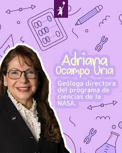
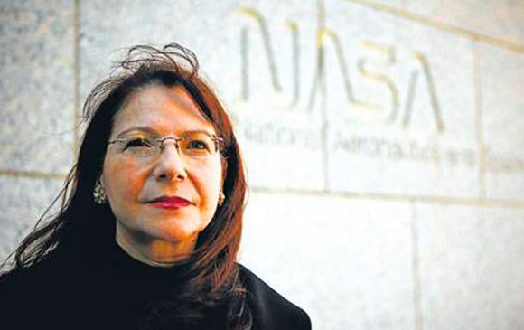
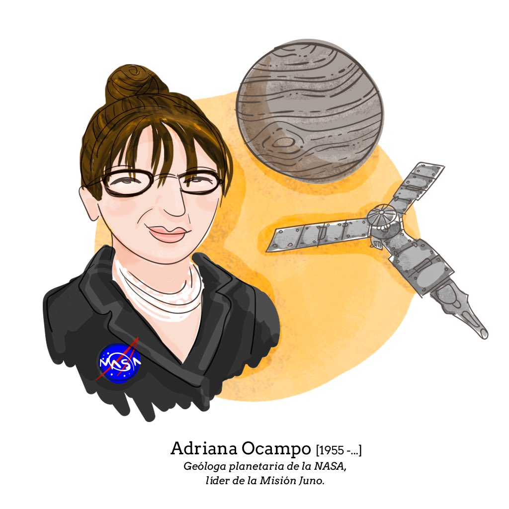

Nació el 5 de enero de 1955 en Barranquilla, Colombia. Desde niña sintió fascinación por el cielo y los planetas.
Migró a Estados Unidos con su familia y allí estudió geología y ciencias planetarias. Ingresó a la NASA como pasante cuando tenía solo 19 años.
Se convirtió en una de las científicas más importantes del estudio de impactos extraterrestres.
Es reconocida por su papel fundamental en la identificación del cráter Chicxulub, la estructura que revela el impacto del meteorito que provocó la extinción de los dinosaurios.
Participó en misiones a Venus, Júpiter y Plutón, siempre desde áreas de investigación avanzada. Fue directora del Programa de Ciencias Planetarias de la NASA. Ha recibido premios internacionales por su trabajo, incluido el de “Mujer del Año en Ciencia”.
Un asteroide lleva su nombre: el Asteroide 177120 Ocampo. Su liderazgo demuestra la potencia intelectual de las mujeres latinas en ciencia espacial. Continúa activa en investigación global. Es un símbolo de excelencia científica.